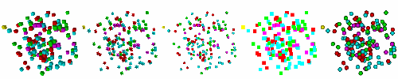

The Mesh plot can use five different point types for drawing point meshes. The Mesh plot draws an object of the desired point type, scaled by the point size, for each point in the point mesh. Setting the point type has no effect if the plotted mesh is not a point mesh. The different point types are as follows: Box, Axis, Icosahedron, Point, and Sphere. Examples of the different point types are shown in figure. To set the point type, select a new point type from the Point Type combo box. When the point type is set to Box, the Mesh plot draws a small cube for each point in the point mesh. When the point type is set to Axis, the Mesh plot draws there small axis-aligned planes for each point in the point mesh. When the point type is set to Icosahedron, the Mesh plot draws small icosahedra at each point in the point mesh. When the point type is set to Point, the Mesh plot uses flat quadrilateral points. When the point type is set to Sphere, the Mesh plot uses flat quadrilateral points with an applied texture to make them look like spheres. In general, setting the point type to: Point will cause the Mesh plot to have the fastest rendering performance. The sphere point type is the second fastest but perhaps the best looking. Other point types can take longer to generate and render because they use additional geometry.
|  |
| Figure 26 |